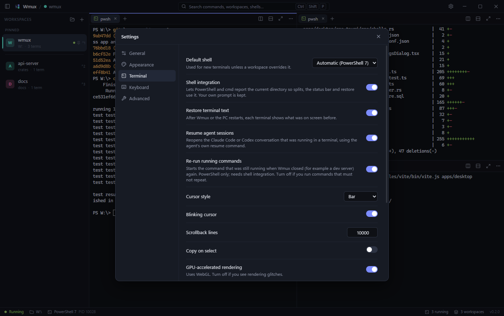

Getting started
Wmux is a Windows app that keeps the terminals, dev servers and coding agents of each project together in one window, and brings them back after a restart. This page takes you from download to a working setup.
Install
Installer (recommended)
- Run
Wmux_<version>_x64-setup.exe. It installs for your user only, so it does not ask for administrator rights. - If SmartScreen shows “Windows protected your PC”, choose More info → Run anyway. Wmux is not code-signed yet.
- Start Wmux from the Start menu.
Other downloads
| File | Use it if |
|---|---|
Wmux_<version>_x64_en-US.msi | You deploy software with MSI or Group Policy. |
Wmux-portable-x64.zip | You want no installation. Unzip it anywhere and run Wmux.exe. |
All files are on the latest release page. To check that a download is intact, compare its hash with SHA256SUMS.txt from the same release:
Get-FileHash .\Wmux_0.3.0_x64-setup.exe -Algorithm SHA256Verify the installation
On first launch you should see:
- A sidebar with one workspace, Workspace 1.
- One terminal with a prompt in your home folder, running your default shell (PowerShell 7 if it is installed, otherwise Windows PowerShell).
- A status bar showing Running, the current folder, the shell and the version.
Type a command to confirm the shell responds. If the terminal shows an error instead of a prompt, see Troubleshooting.
First steps
- Open a project. Press Ctrl Shift O and pick a folder. Wmux creates a workspace named after it, with a terminal already in that folder.
- Split the pane. Ctrl Shift D splits right and Ctrl Shift E splits down. The new terminal opens in the folder you were in.
- Start what you need. A dev server in one pane, tests in another,
claudeorcodexin a third. - Close Wmux and open it again. Everything is where you left it. See Session restore.

You do not need to remember shortcuts. Ctrl Shift P opens the command palette, where you can search for any action.
Keyboard shortcuts
| Action | Shortcut |
|---|---|
| Command palette | Ctrl Shift P |
| New workspace | Ctrl Shift N |
| Open folder as workspace | Ctrl Shift O |
| Close workspace | Ctrl Shift W |
| Next / previous workspace | Ctrl Tab / Ctrl Shift Tab |
| Switch to workspace 1–9 | Ctrl 1 … 9 |
| New terminal tab / close tab | Ctrl Shift T / Q |
| Next / previous tab | Ctrl PageDown / PageUp |
| Split right / split down | Ctrl Shift D / E |
| Maximize or restore the pane | Ctrl Shift Enter |
| Focus the pane in a direction | Ctrl Alt Arrow |
| Swap the pane with its neighbor | Ctrl Alt Shift Arrow |
| Search terminal output | Ctrl Shift F |
| Restart terminal / clear | Ctrl Shift R / K |
| Bigger / smaller / reset font | Ctrl = / - / 0 |
| Toggle sidebar | Ctrl Shift B |
| Settings | Ctrl , |
Ctrl C copies when text is selected and interrupts the running command otherwise. Ctrl V pastes. Right-click copies the selection, or pastes if nothing is selected.
Change any shortcut under Settings → Keyboard.
Workspaces and panes
A workspace is one project: a name, a color, a folder, and a layout of panes. The sidebar lists them, and Ctrl 1–9 jumps straight to one. Terminals in other workspaces keep running while you look at this one.
A pane is a rectangle in the layout. Split it to make more, drag the divider between two panes to resize them, and use the pane's buttons to split, maximize or close it. Each pane holds one or more tabs, and each tab is a terminal.
Use a workspace's menu in the sidebar, or the command palette, to rename, duplicate, pin or delete it. Workspace Settings lets you set, per workspace:
- the folder new terminals start in,
- the shell to use,
- startup commands, run in the workspace's first terminal when it opens,
- environment variables for its terminals.
Moving terminals
Drag a tab to rearrange things. The terminal keeps running while it moves.
- Onto another pane's tab strip: the tab joins that pane, at the position you drop it.
- Onto the left, right, top or bottom part of a pane: the tab becomes a new pane on that side.
- Onto a workspace in the sidebar: the tab moves to that workspace.
The pane menu can send a whole pane, with all its tabs, to another workspace. Ctrl Alt Shift Arrow swaps the focused pane with its neighbor. Press Esc to cancel a drag.
Agents
When Claude Code, Codex, Gemini CLI, OpenCode or Aider runs in a terminal, its tab shows an agent icon: pulsing while the agent is working, amber when it is waiting for you, green when it is idle. The workspace in the sidebar and the status bar show the same. Claude Code reports its own status; for the other agents, recent terminal output counts as working.
Session restore
When you open Wmux again, after closing it or after the PC restarted, each terminal comes back in its workspace, pane, tab and folder. On top of the layout, three things are restored.

Terminal text
The screen and scrollback of each terminal are saved every 10 seconds and when the window closes. A restored terminal shows that text, then a session restored line, then a new prompt.
Agent sessions
While Claude Code or Codex runs in a terminal, Wmux records the agent's own session id. After a restart it runs the agent's resume command in that terminal, in the folder the agent was started in:
claude --resume <session id>
codex resume <session id>Nothing is installed into the agents and no hooks are needed. Wmux reads what the agents already record about their running sessions.
Running commands
If a command was still running when Wmux closed, such as a dev server or a file watcher, it is started again. A command that had finished is not repeated. This needs PowerShell with shell integration turned on.
What is not restored
- The process itself. No terminal can keep a program alive through a reboot. Wmux starts a new shell and brings it to where the old one stopped. Unsaved state inside a program, such as an editor buffer or a REPL's variables, is gone.
- Commands in cmd, Git Bash and WSL are not re-run. Their text and folder are restored.
- Agents running inside WSL are not detected.
- Multi-line commands are not re-run.
- With several Codex sessions open at once, matching each session to its terminal is best effort.
Shell integration
Shell integration lets the shell tell Wmux which folder it is in and which command is running. It powers “open the new split in this folder”, the folder in the status bar, and re-running commands after a restart.
| Shell | Current folder | Running command |
|---|---|---|
| PowerShell 7, Windows PowerShell | Yes | Yes |
| cmd | Yes, unless you set your own PROMPT | No |
| Git Bash, WSL | If your shell emits OSC 7 | No |
In PowerShell it wraps your existing prompt function, so your own prompt and theme are kept. Turn it off under Settings → Terminal → Shell integration.
Settings
Open settings with Ctrl ,. Changes apply immediately.

| Tab | What you can change |
|---|---|
| General | Whether closing a workspace asks for confirmation. |
| Appearance | Dark, light or system theme; accent color; terminal font, size and line height. |
| Terminal | Default shell, shell integration, the three restore options, cursor, scrollback length, copy on select, GPU rendering. |
| Keyboard | Every shortcut. |
| Advanced | Where the database is, and the app version. |
Your data
Workspaces, settings and saved terminal text live in one SQLite file on your PC:
%APPDATA%\dev.wmux.desktop\wmux.dbNothing is sent anywhere. Saved terminal text is whatever was on screen, so it can contain anything you printed there. To keep terminal text out of the file, turn off Restore terminal text.
Set the WMUX_DATA_DIR environment variable before starting Wmux to keep the data somewhere else, for example next to a portable copy. If the database cannot be read, Wmux moves it aside, starts fresh and tells you where the old file went.
Updates
From version 0.4.0, Wmux updates itself. It looks for a new version when it starts and a few times a day; when there is one, an Update to vX button appears in the status bar. Click it and Wmux downloads the new version, installs it and restarts with your terminals restored. Nothing is installed without that click, and every update is checked against a signing key built into the app. You can also run Check for Updates from the command palette, or turn the automatic check off under Settings → General.
This works for copies installed with the setup program. MSI and portable copies, and versions older than 0.4.0, are updated by hand: download the newest installer from the releases page and run it over the existing installation. Your workspaces and settings are kept. The changelog lists what changed.
Requirements
- Windows 10 version 1809 or later, or Windows 11.
- A 64-bit Intel or AMD processor (x64). ARM64 builds are planned.
- The Microsoft Edge WebView2 runtime. It is part of Windows 11; on Windows 10 the installer downloads it if it is missing. The portable ZIP does not install it for you.
Build from source
You need Rust (stable, MSVC toolchain), Node.js 22 or later, pnpm 9, and Visual Studio Build Tools with the “Desktop development with C++” workload.
git clone https://github.com/SahinurDEV/wmux.git
cd wmux
pnpm install
pnpm dev # run the app with hot reload
pnpm build # installers in target/release/bundle
pnpm test # frontend and Rust testspnpm dev runs under its own app identity, so it does not touch the data of an installed Wmux.
Troubleshooting
“Windows protected your PC”
Choose More info → Run anyway. This appears because the app is not code-signed yet.
The app is blocked with no way to run it
Smart App Control is on. See the note under Install.
A terminal says “Failed to start shell”
The shell chosen for that terminal is not available. Press Enter to retry, or pick another shell from the tab's menu or under Settings → Terminal → Default shell.
An agent session did not resume
The agent must have been running for a few seconds before Wmux closed, and its command (claude or codex) must be on your PATH. A session with no messages in it has nothing to resume. Check that Resume agent sessions is on.
A command was not re-run
Re-running works in PowerShell with shell integration on, for single-line commands that were still running when Wmux closed.
Something else
Open an issue and include the Wmux version from the status bar.